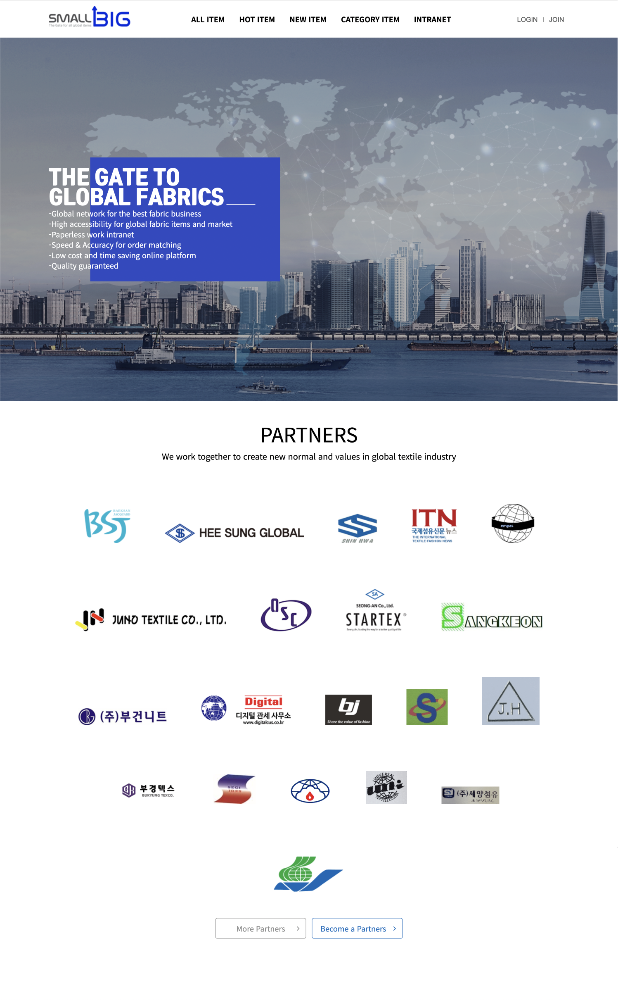

스몰빅

웹사이트 바로가기
글로벌 원단 수출 쇼핑몰 구축
그누보드를 활용한 커스터마이징 퍼블리싱이 진행한 작업입니다. 특히 고객센터 부분을 작업하면서 그누보드 구조에 대한 이해도를 높일 수 있었던 작업이었습니다.
< 오케이소프트 작업 >
작업기간
2022.02 ~ 2022.04
기술스택
HTML5, CSS3, jQuery, javaScript, php
plug-in
swiper.js , rwdImageMaps.js, Winwheel.js